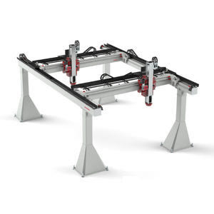
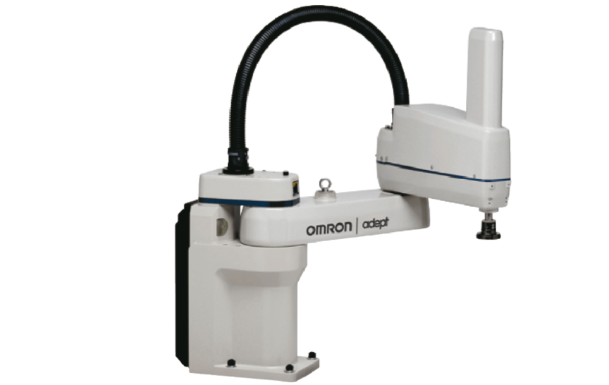
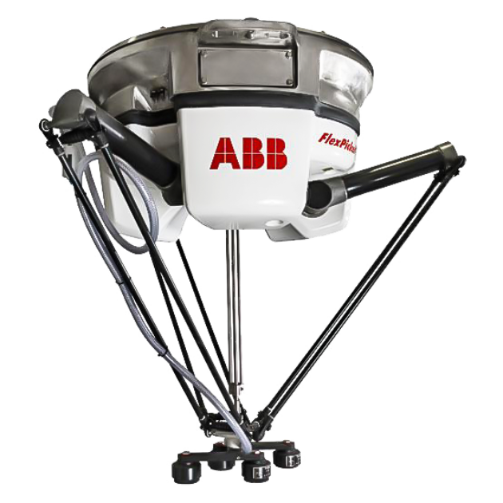

(HW1) Homework 1: Examples of robots by morphology
Cartesian (PPP)
Güdel gantryRobot

A modular cartesian industrial robot for high-accuracy handling integrated into automation cells. Widely used in industries like automotive and intralogistics.
- Advantages
- Very high stiffness and repeatability.
- Large rectangular workspace and easy to scale.
- Disadvantages
- Big structure, therefore, can be heavy and expensive at large spans.
- Cable management and moving mass on long axes can limit dynamics.
SCARA (RRP)
OMRON eCobra

A 4-axis industrial robot launched in 2016 and used nowadays for high-precision automation, including electronics and pharmaceutical-oriented environments.
- Advantages
- High speed with good repeatability (planar motion is very efficient).
- High stiffness in the vertical axis (good for “downward” interactions).
- Disadvantages
- Limited orientation capability (mainly about Z).
- Not as flexible as other articulated robots for awkward poses (the workspace is a toroid).
Articulated (RRR)
Universal Robots UR5e

A 6-axis collaborative robot introduced in 2018. It has integrated torque sensor for compliant interaction.
- Advantages
- Highest dexterity (reach around obstacles).
- Adaptable to various geometric spaces.
- Disadvantages
- More complex kinematics and calibration.
- Joint limits are a real planning constraint.
- Often slower and less stiff than PPP/SCARA.
Spherical / Polar (RRP)
A manipulator designed by Victor Scheinman at Stanford (1969). It uses two revolute joints plus a long prismatic “telescoping” link (RRP) to sweep a distinctly spherical/polar workspace.
- Advantages
- Fewer joints while still covering many directions.
- It can be mechanically simple for certain radial/angular motions.
- Disadvantages
- Accuracy and stiffness vary with radius.
- More awkward to fit into rectangular workcells.
- Not as common today.
Cylindrical (RPP)
JEL MCR3160C

A 3-axis clean robot designed for wafer handling in semiconductor production/inspection lines.
- Advantages
- Simple and with robust kinematics.
- Often clean cable routes (axis separation is mechanically clear).
- Disadvantages
- Limited dexterity/orientation.
Delta (Parallel)
ABB IRB 360 FlexPicker

Parallel robot optimized for high-speed picking and packing introduced in 2008.
- Advantages
- Mechanically efficient for rapid point-to-point motion.
- High repeatability in a defined “dome-like” workspace.
- Disadvantages
- Not ideal for long-reach or heavy payload relative to size.
- Limited workspace volume and orientation.
Resources
Bibliography
[1] Texas Instruments, “An engineer’s guide to industrial robot designs,” Texas Instruments, PDF. Accessed: Jan. 27, 2026. [Online]. Available: https://www.ti.com/lit/eb/ssiy006/ssiy006.pdf
[2] Güdel Group, “Gantry robots (gantryRobot),” gudel.com. Accessed: Jan. 27, 2026. [Online]. Available: https://www.gudel.com/products/robots/gantry-robot
[3] OMRON Robotics, “eCobra SCARA Robot for Precision & Speed,” robotics.omron.com. Accessed: Jan. 27, 2026. [Online]. Available: https://robotics.omron.com/products/industrial-robots/scara/ecobra/
[4] Universal Robots, “UR5e e-Series datasheet,” Universal Robots, PDF. Accessed: Jan. 27, 2026. [Online]. Available: https://www.universal-robots.com/media/1807465/ur5e_e-series_datasheets_web.pdf
[5] Stanford University, “Stanford’s robotics legacy,” Stanford News, Jan. 16, 2019, accessed Jan. 27, 2026. [Online]. Available: https://news.stanford.edu/2019/01/16/stanfords-robotics-legacy/
[6] JEL Corporation, “Products | MCR3160C | Wafer Transfer Atmospheric Robot,” jel-robot.com. Accessed: Jan. 27, 2026. [Online]. Available: https://www.jel-robot.com/products/MCR3160C.html
[7] ABB, “IRB 360 FlexPicker® — Greater flexibility in a compact footprint,” ABB Robotics, Brochure ROB0082EN_G, PDF. Accessed: Jan. 27, 2026. [Online]. Available: https://search.abb.com/library/Download.aspx?DocumentID=ROB0082EN_G